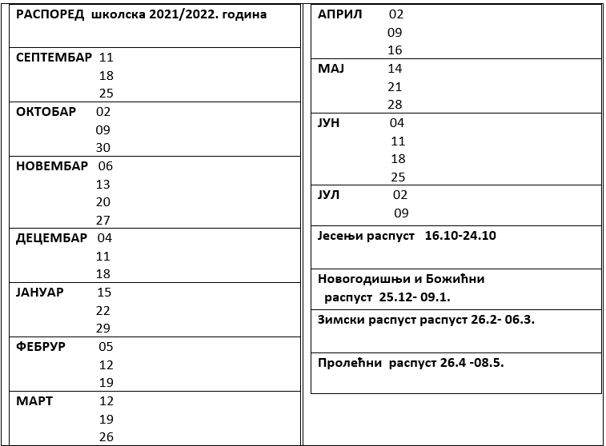

Dobro došli na internet sajtu koji vam pruži pogled u suprottredam i dopunsku školu.
Под покровитрељством Министарства просвете, науке и технолошког развоја Републике Србије.
Часови су бесплатни.


ДОЂИТЕ ДА СЕ ДРУЖИМО И КРОЗ ИГРУ УЧИМО !!!
Упис у Српску допунску школу за школску 2021/ 2022.
годину је у току и одвија се под покровитељством Министарства просвете, науке и технолошког развоја Републике Србије и потпомогнута од стране удружења СОП Ротердам....
Школа је бесплатна а ученици поред тога што ће учити српски језик, ћирилично писмо, “путоваће” Србијом , кроз историју, географију, традицију и културу својих предака.
Најважније је да се сви лепо дружимо , учимо и заједно растемо !
НАШЕ ОДРЕДНИЦЕ :
ОСНОВА -СРЦЕ ЗА НАШУ ДЕЦУ. ЦИЉ -УЧЕЊЕ И ДРУЖЕЊЕ. РЕЗУЛТАТИ- СРЕЋНИЈИ, ОБРАЗОВАНИЈИ И БОЉИ.
Контакт : СОП Ротердам admin@soprotterdam.com
Наставник: Стана Полачек
Место: Melanchthon Schiebroek
Van Bijnkershoekweg 97, 3052 PB Rotterdam
Време: субота
1. млађа група од 10:00 до 12 :15 асова
2.средња група од 12:25 до 14:40 часова
3. виша група од 14:45 до 16:45 часова
Посебан програм
основног образовања и васпитања у иностранству реализује се на три узрасна ниво:
млађем ( први, други и трећи разред),
средњем ( четврти, пети и шести разред) и старијем ( седми и осми разред) из три предемта: Српски језик, Моја отаџбина Србија и Основи културе српског народа.
Настав ће се изводити са децом ураста од 6 до 15 година.
Настав ће се изводити суботом од 10:00 до 17 :00 часова...
Наставник за наредну школску годину је Стана Полачек, професор српског језика и књижевности из Ротердама
Уколико сте заинтересовани да Ваше дете похађа наставу српсог језика, да се дружи, игра и пева са осатлом децом, јавите се на : spolacek@gmail.com или admin@soprotterdam.com
Увек постоји могућност отварања нових група.
ШКОЛСКИ КЛЕНДАР ЗА ШКОЛСКУ 2021/2022 ГОДИНУ
ДАН ПРИМИРЈА, 11 новембар
ДАН ДРЖАВНОСТИ РЕПУБЛИКЕ СРБИЈE, 15. фебруар
ИНДИВИДУАЛНИ РОДИТЕЉСКИ САСТАНЦИ : Свакe суботе, када се одржава допунска настава у терминима после наставе , према потреби и жељи родитеља.
Датуми наведени у календару могу да се промене у зависности од околности. Родитељи ће бити благовремено обавештени.
Од школског материјала неопходно је да деца имају:
- Велику свеску А4 на линије
- Оловку и гумицу/оштрач
- Дрвене бојице
- Мапу/ фациклу
Истовремено је неопходно да сваке суботе имамо по два дежурна родитеља чији је задатак да припазе на децу за време паузе и након часова да сви заједено поспремимо учионицу и собу за професоре, у којима могу да бораве родитељи, док чекају своју децу. Дежурстава родитеља ћемо заједно договорити.